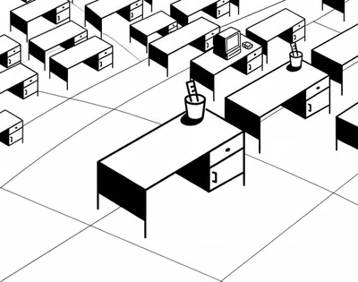
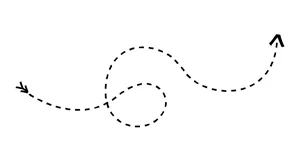
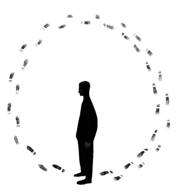
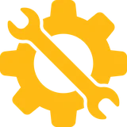
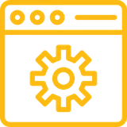
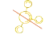
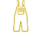
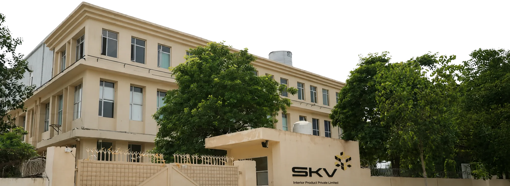
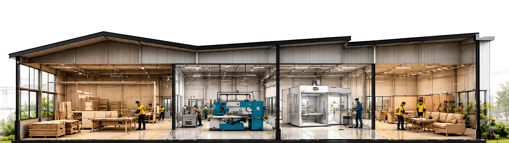

We began with what people need, let the site set the terms, and the concept followed.
Every decision began with what the brief and the research say people need, then grew from the site itself.
- Understandthe people
- Spotthe opportunity
- Discoverthe site
- Framethe idea
- Shapethe plan
- Layerthe lenses
- Understandthe people
- Spotthe opportunity
- Discoverthe site
- Framethe idea
- Shapethe plan
- Layerthe lenses
About 640 Ackers, from two offices, onto one floor.
So we began with them.


Moving offices is easy. Moving people isn’t.


A place that already feels like home.
What makes one place feel like home? We looked at two things.
of employees in India come back to the office to feel they belong
Cisco, “From Mandate to Magnet”, hybrid work study: 9,200 employees across Asia Pacific incl. India, Nov 2023Nalanda. Takshashila. Pathways, courtyards and steps.
a campus.
…maybe, we’ve felt this before.
A campus is where we first felt safe among people.
Protection is what ACKO promises its customers.
What if the workplace kept that promise to its own people?
So we started where it has to happen: one floor in Koramangala.
Regalium, Koramangala
Koramangala Industrial Layout, off Hosur Road, Bengaluru.
- Floor
- 3rd floor · one plate
- Super built-up
- 91,000 sq ft
- Carpet
- 56,650 sq ft
- People
- about 640
Spaces
Every space in its colour. Hover a workstation type to see where it sits on the floor.
651 workstations, four ways to work
Neighbourhoods
Arrival at both lift lobbies, and meeting rooms, booths and planting inside every neighbourhood.
Biophilia
Where people gather, CO₂ gathers. The heat shows where breathing out concentrates: the desks, the café, reception, the lift lobbies and the meeting rooms. Service rooms (server, UPS, battery) are counted as sources too.
Planting where it's needed. The plants are placed where people gather, and the busiest spots soften around them.
Conceptual: fresh air with CO₂ sensing carries the load; the planting supports air quality and wellbeing.
Green in view. Planting placed in the line of sight from the desks: a glance at green, all day, to lift the mood.
Straight sight lines on the plan, up to 8 m, not through a room.
Acoustics
Four levels of treatment, matched to how loud and how private each space is. Hover a level to find its rooms.
The rings show sound: wide and lingering in the open workhall, cut short in the treated rooms.
Due Diligence
What the building brings, and the layout works around. Hover one to find it on the floor.
External glazingEntry ×2
Sun path
The site's sun study on the floor: the sun's way round the building, and where its light falls, half hour by half hour.
| Zones | Areas | Requirements | Option - 2A |
|---|---|---|---|
| Public zone | Reception | 1 | 1 |
| Waiting Lounge | 1 | 1 | |
| Workhall | Workstations | 600–700 | 651 |
| Executive cabin | 3 | 3 | |
| Meeting room | Board room - 32 pax | 1 | 1 (35 pax) |
| Focus room - 2 pax | 20 | 16 | |
| Visitor Hub | 5 | 5 | |
| Dealer Room - 4 pax | 1 | 1 | |
| Quick Sprint Room - 3 pax | – | 2 | |
| Quick Sprint Room - 4 pax | 25 | 16 | |
| Quick Sprint Room - 6 pax | – | 1 | |
| Quick Sprint Room - 8 pax | – | 1 | |
| Collaboration huddles - 10–12 pax | 18 | 13 | |
| Departmental Room - 18–20 pax | 8 | 6 | |
| Hatchery - 08 pax | 1 | 1 (12 pax) | |
| Studio | 1 | 1 | |
| Phone booth | 44 | 42 | |
| Training room | Training Room - 40 pax | 1 | 1 (40 pax) |
| Recreational area / wellness | Cafeteria | 1 (150 pax) | 1 (178 pax) |
| Mother's Room | 1 | 1 | |
| Zen Room | 5 | 5 | |
| Nap Room | 1 | 2 | |
| Medical Room | 1 | 1 | |
| Prayer Room | 1 | 1 | |
| Services | UPS / Electrical | 1 | 1 |
| Battery | 1 | 1 | |
| Hub Room | 2 | 2 | |
| Server Room | 1 | 1 |
One floor, longer than two football pitches.
…and only half a pitch wide.
so how do you make it feel like one team?
a long, thin floor: the shape the plan has to answer
One vast floor. A thousand disconnected experiences.
HomogeneityA repetitive, uninterrupted workstation layout creates a uniform environment with limited spatial identity.

01 DistanceThe elongated floor plate weakens the sense of direction, making navigation and wayfinding challenging.
02
03 DisorientationAmenities feel disconnected from work zones, increasing perceived distances and reducing spontaneous interaction.

A campus that connects, not just accommodates.

So, let’s embrace what’s next.
A workplace inspired by the Mobius Strip,one continuous journey where every connection leads to another.
Bold. Fresh. Fearless.Welcome to The loop, Acko Campus where we are with you…
 ’s Campus is more than just a workplace.
’s Campus is more than just a workplace.Draws from this familiar feeling and reinterprets it for the workplace. Rather than creating a conventional office, the campus is envisioned as a Loop of familiar, human-centric spaces that encourage people to pause, connect, interact and feel at ease.
Loop , where Emotions Matter!The ACKO Loop transforms the workplace from a collection of spaces into a continuous emotional journey, where every transition, interaction and pause is designed to make people feel safe, welcomed, connected, impactful and cared for.
The Loop, on the floor.
one path through all seven stops: the concept is the plan
Understanding the Campus Strategy
The main idea was to make sure, the whole concept embraces our space planning as well as the Visual direction. More over how efficiently these could be translated in a day in life of an acker. Be it in case of an employee or a client that walks in. How well we cater to people.
Inspired by institutional pathways that bring spaces to life, the ACKO Loop connects people and spaces, fostering belonging and continuity.
Hover a dot on the plan or the model to see what it is · scroll the model to zoom
Spaces
Every space in its colour. Hover a workstation type to see where it sits on the floor.
651 workstations, four ways to work
Neighbourhoods
Arrival at both lift lobbies, and meeting rooms, booths and planting inside every neighbourhood.
of the seats have a plant in view within 8 m
A glance at green, all day.
of the seats see a plant within 8 m: in every 100
From of the desks, green is a glance away.
Biophilia
Where people gather, CO₂ gathers. The heat shows where breathing out concentrates: the desks, the café, reception, the lift lobbies and the meeting rooms. Service rooms (server, UPS, battery) are counted as sources too.
Planting where it's needed. The plants are placed where people gather, and the busiest spots soften around them.
Conceptual: fresh air with CO₂ sensing carries the load; the planting supports air quality and wellbeing.
Green in view. Planting placed in the line of sight from the desks: a glance at green, all day, to lift the mood.
Straight sight lines on the plan, up to 8 m, not through a room.
Acoustics
Four levels of treatment, matched to how loud and how private each space is. Hover a level to find its rooms.
The rings show sound: wide and lingering in the open workhall, cut short in the treated rooms.
Due Diligence
What the building brings, and the layout works around. Hover one to find it on the floor.
| Zones | Areas | Requirements | Option - 2A |
|---|---|---|---|
| Public zone | Reception | 1 | 1 |
| Waiting Lounge | 1 | 1 | |
| Workhall | Workstations | 600–700 | 651 |
| Executive cabin | 3 | 3 | |
| Meeting room | Board room - 32 pax | 1 | 1 (35 pax) |
| Focus room - 2 pax | 20 | 16 | |
| Visitor Hub | 5 | 5 | |
| Dealer Room - 4 pax | 1 | 1 | |
| Quick Sprint Room - 3 pax | – | 2 | |
| Quick Sprint Room - 4 pax | 25 | 16 | |
| Quick Sprint Room - 6 pax | – | 1 | |
| Quick Sprint Room - 8 pax | – | 1 | |
| Collaboration huddles - 10–12 pax | 18 | 13 | |
| Departmental Room - 18–20 pax | 8 | 6 | |
| Hatchery - 08 pax | 1 | 1 (12 pax) | |
| Studio | 1 | 1 | |
| Phone booth | 44 | 42 | |
| Training room | Training Room - 40 pax | 1 | 1 (40 pax) |
| Recreational area / wellness | Cafeteria | 1 (150 pax) | 1 (178 pax) |
| Mother's Room | 1 | 1 | |
| Zen Room | 5 | 5 | |
| Nap Room | 1 | 2 | |
| Medical Room | 1 | 1 | |
| Prayer Room | 1 | 1 | |
| Services | UPS / Electrical | 1 | 1 |
| Battery | 1 | 1 | |
| Hub Room | 2 | 2 | |
| Server Room | 1 | 1 |
Same rhythm.
Absorptive ceiling systems with acoustic tiles or spray treatment; dedicated ceiling treatment in meeting rooms for RT60 control.
Absorptive wall panels in meeting spaces enhance speech clarity and reduce echo, with feature walls combining acoustic and aesthetic performance.
Full-height acoustic partitions with appropriate STC ratings ensure privacy based on room function and adjacency.
Control duct-borne and breakout noise through HVAC design, with terminal devices meeting zone NC targets.
Background sound masking evens out the floor’s noise, so speech carries less and focus holds.
Acoustic-rated doors and double glazing assemblies complement partition STC performance for meeting spaces.
Easy to find.
Room to explore.
A place that already feels like home.
A sophisticated blend of light wood, Accent stone, soft neutrals and lush greenery for a grounded and contemporary workplace.
A place that already feels like home.
Walkthrough
A walk through the Loop.
A day in ACKO
From arrival to the evening: the campus in use through the day. Tap a light for the wayfinding at that spot.
The live model needs WebGL on this machine.
Thank you
One Loop. One experience.


About SKV
Let us get to know each other better
on this journey together
17 years of building workplaces that perform
The Foundation of Excellence
From humble, bootstrapped beginnings, SKV today stands trusted by MNCs and Fortune 500 clients across India. Specialists in interior design and fit-outs, SKV is synonymous with trust, legacy, client satisfaction, quality and delivery excellence. With a commitment to excellence, they create spaces that inspire and empower world-class organisations.
What Sets Us Apart
Our Services
Design & Build
- From start to finish, we design and deliver your space
- Modular approach for quality and faster execution
- Customisable solutions
- Efficiency delivery through in-house capabilities
- Workspaces designed to enhance productivity
- Sustainable designs to protect the environment


What we Stand for
Quality
We consistently meet and strive to exceed the agreed upon requirements of our clients.
The quality plan involves:
- Monitoring and constantly updating work progress
- Inspections and quality tests at regular intervals
- Surveillance and on-site inspections
Sustainability
We are conscious of reducing our carbon footprint and use sustainable materials and products.
- Use of adhesives, paints with low VOC content
- Recycling of construction waste
- Use of recyclable materials

Use of non-urea formaldehyde materials
Safety
From site instructions to training and audits, we implement a full-proof safety strategy

Use of materials and gears according to safety standards- Implementing safety instructions
- Guidelines displayed on site in multiple languages
- Dedicated safety team with certified members
Brands Who Trust Us.
Our Factory

Our Factory

What We Create
We design and manufacture furniture that elevates everyday environments - blending comfort, function, and timeless design.
SKV leadership.
Trusted by global leaders across industries
The Vision was to create a multifunctional space that could permeate synergy and collaboration between our teams while also serving as an experience centre for our customers. SKV delivered the project with great efficiency, realigning the designs as per our changing inputs, as & when required.
Thanks SKV for delivering the incredible home for the LEVI’s team in South Asia and MENA. Everyone loves the energy and cool vibe which is so in line with our brand, authenticity, heritage and DNA!
Things were right on time and as per the parameters. SKV is doing exceptionally good in terms of delivery of projects. The idea to create an office which is catering to the size of the company, that is something SKV has done very well.